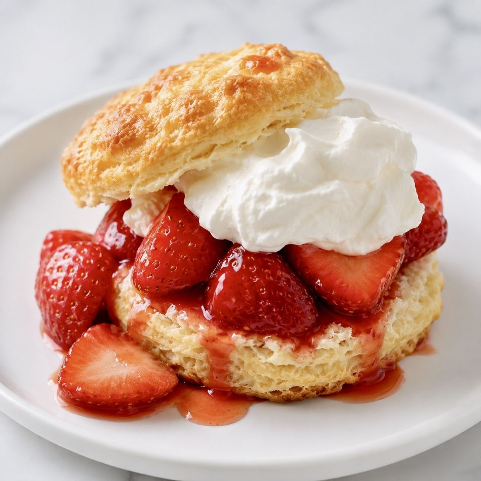

Some recipes are chosen because they are impressive. Some because they are difficult. This one has earned its place for a much better reason: it is the dessert Rick asks for every year for his birthday.
The Dessert He Keeps Asking For
There is something wonderfully uncomplicated about a birthday request you can count on. For Rick, it is strawberry shortcake. Not a towering layer cake, not something covered in elaborate decoration, and not a dessert that requires an afternoon of pastry gymnastics. Just good strawberries, something tender and buttery underneath, and freshly whipped cream.
For his birthday dinner, I wanted to make the whole thing from scratch without making it fussy. The foundation was a batch of buttermilk biscuits, made with the Italian 00 flour I already had in the pantry and store-bought buttermilk. Keeping the butter and buttermilk cold and handling the dough gently gave me the tender, layered biscuit I wanted.
What Exactly Is Strawberry Shortcake?
The interesting thing about strawberry shortcake is that there has never been just one version. In American cookery, the name has been used for desserts built around different kinds of shortcake: some closer to a biscuit, some made as a batter or cake, and others assembled in multiple layers. The common idea is simple — a rich or tender base, ripe fruit, and something creamy — while the details have always been open to interpretation.
That flexibility is part of the appeal. Strawberry shortcake belongs to the long American tradition of adapting familiar baking techniques to what is available and what a household prefers. As chemical leaveners became increasingly useful in nineteenth-century American baking, biscuit-style shortcakes became practical and popular, giving cooks another way to build the dessert without relying on a sponge cake.
A Pennsylvania Shortcake Has More Than One Shape
A particularly nice piece of local history turns up in The Warren Cook Book, a community cookbook associated with the Young Ladies’ Missionary Society of the Presbyterian Church in Warren, Pennsylvania. The Library of Congress catalogs a first edition from 1888, followed by later editions in 1903, 1908, and 1912. That makes the book itself a small record of a continuing Northwestern Pennsylvania community-cookbook tradition.
The 1903 second edition is especially useful for this story because it gives us three different strawberry shortcake recipes on the same page. One is a richer cake made with sugar, egg, butter, milk, flour, and cream of tartar. Another is unmistakably biscuit-like: flour, lard, salt, baking powder, and milk are made into a soft dough, cut with a biscuit cutter, baked quickly, split while hot, buttered, and filled with fresh strawberries. A third uses a layered shortcake dough made with flour, baking powder, butter, and milk, then fills the baked layers with crushed strawberries and sugar.
In other words, a strawberry shortcake made with biscuits is not a modern shortcut or a recent interpretation. A Warren, Pennsylvania cookbook from 1903 records essentially the same basic idea: bake a biscuit-like shortcake, split it, butter it, and let fresh strawberries do the rest. The cookbook even advises that the shortcake should not be assembled until serving time.
That feels wonderfully familiar. The ingredients and equipment may change, but the instinct is remarkably close to what we are doing here: make the biscuit well, keep the strawberries fresh and juicy, add cream, and put everything together at the last possible moment.
Why the Biscuit Matters

The biscuit is more than a container for the strawberries. It is the part that determines whether the dessert feels delicate or heavy, tender or dry, bakery-like or homemade in the best possible way.
For this version, I used Caputo Chef’s Flour and a combination of baking powder and a small amount of baking soda. The important technique is less about working the dough and more about not working it too much: cold butter, cold buttermilk, a shaggy dough, a few gentle folds, and a straight-down cut rather than twisting the cutter. The goal is a biscuit with enough structure to hold strawberries and cream while still being tender enough to yield to a fork.
The linked recipe below is therefore intentionally just the biscuit recipe. It is the component I made from scratch for the shortcake, not a separate recipe for the assembled strawberry dessert.
Let the Strawberries Do Some Work
For the fruit, we picked the freshest strawberries we could find. I halved or quartered them depending on their size, then gave them a little sugar and a splash of lime juice and let them macerate. That small amount of time does a lot: the berries release some of their own juices and create a light, bright syrup that can soak into the biscuit without turning the whole dessert into something heavy.
There are plenty of ways to take the fruit in another direction. Some cooks leave the berries almost completely whole. Others crush them more thoroughly. You can use more sugar, less sugar, or another berry entirely. Historic recipes were just as willing to vary the fruit and the proportions. The point is not to make the strawberries complicated. It is to give good fruit enough encouragement to become part of the dessert.
And Then There Is the Whipped Cream
The final component was fresh whipped cream. I used heavy whipping cream in the KitchenAid stand mixer, chilling the bowl and whisk attachment beforehand to keep everything cold while it whipped.
I kept the cream lightly sweetened. Between the berries, the biscuit, and the birthday dinner that came before it, there was no need for a sugar bomb at the end of the meal. The cream should soften the biscuit, round out the strawberries, and make the whole thing feel finished without taking over.
Putting It All Together
When it is time for dessert, the assembly is almost embarrassingly easy. Split a warm or just-cooled biscuit, spoon over the strawberries and their juices, add a generous cloud of whipped cream, and put the top back on — or don't, depending on how you like to eat it. A few extra berries on top make it look festive enough for a birthday without turning it into a production.
And this is one place where the old recipes have good advice. The Warren Cook Book's 1903 biscuit-style version says to assemble the shortcake immediately and serve it with the crushed berries. Another of its recipes cautions not to spread the shortcake until serving time. The reason is obvious once you have made one: biscuits are at their best before the fruit has had time to turn them soggy.
Why This One Became a Tradition
There are desserts you make because you want to try something new, and there are desserts you make because someone you love asks for them. Strawberry shortcake became the latter in our house.
I like that it has room for variation. The base can be a biscuit, a batter-style shortcake, or another tender cake. The berries can be barely sweetened or allowed to become almost jammy. The cream can be barely sweet, vanilla-scented, or simply left alone. Even the old Warren recipes from Northwestern Pennsylvania show how much freedom cooks had within the same basic idea.
That is probably why this dessert feels right for a birthday. It is familiar without being rigid. It has a history without needing to be precious about it. And every year, when Rick asks for it again, there is still room to make it ours.
Make the biscuit foundation
→ View the Buttermilk Biscuit Recipe
A Note on the Historical Recipe
The local reference here is The Warren Cook Book, published in Warren, Pennsylvania by the Presbyterian Church's Young Ladies' Missionary Society. The Library of Congress catalogs the first edition in 1888 and the second edition in 1903. The three strawberry shortcake recipes discussed above are from the 1903 edition, page 126. The book is in the public domain and available through the Library of Congress.